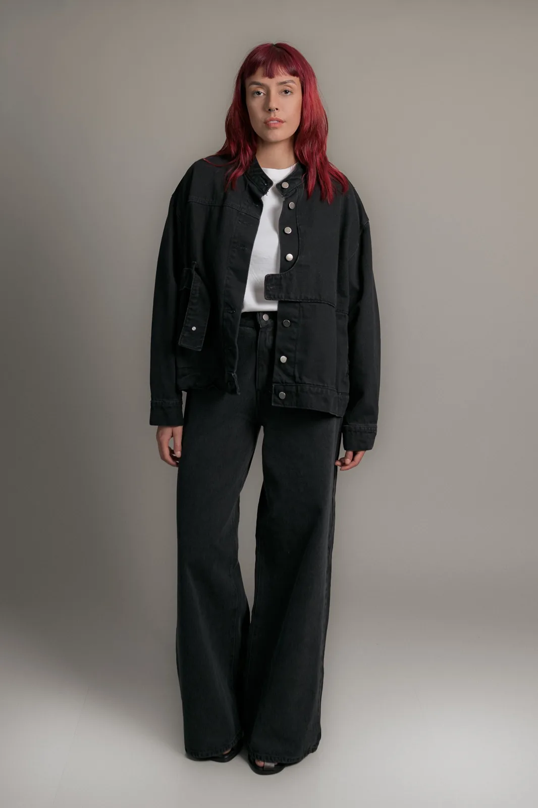
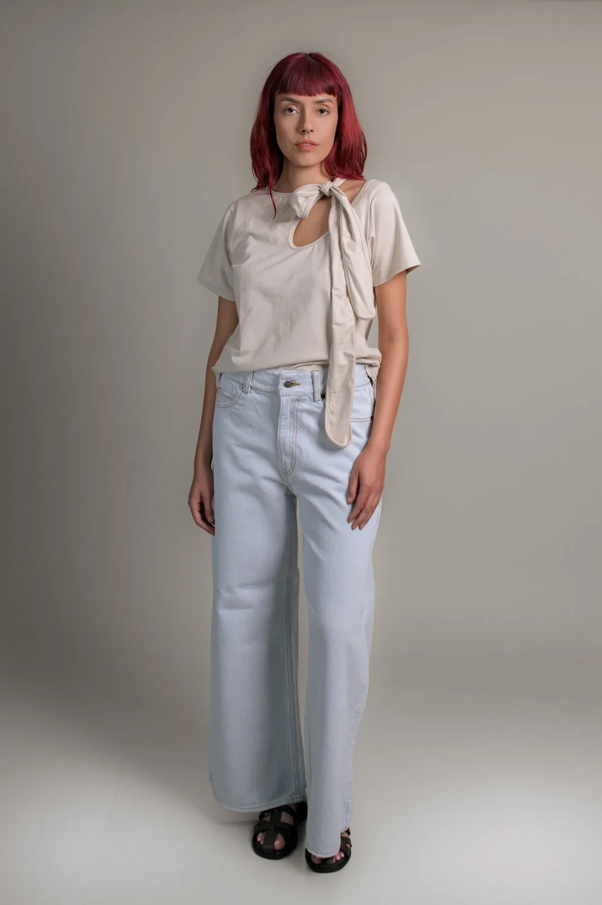
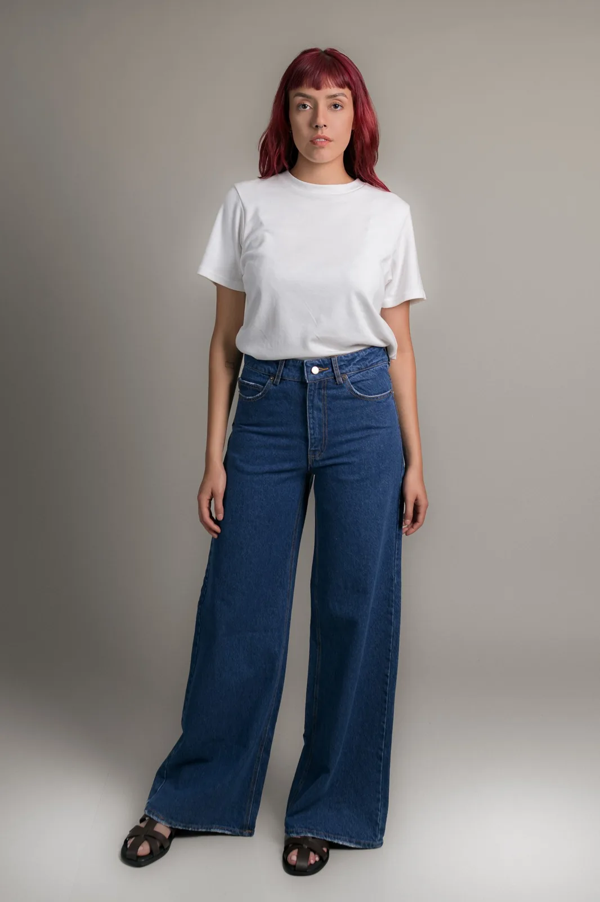

01
Referencia de catálogo
Jacket Valeria
Chaqueta holgada con cuello mandarín y bolsillos delanteros.

Imagen publicada por ELEMENTO GuatemalaSiluetas de ELEMENTO, confeccionadas en Guatemala. Explora cortes y arma una selección con intención.
Guarda tus referencias en una lista local y prepara el siguiente paso. Precios, variantes y existencias se revisan en cada ficha oficial.
Chaqueta holgada con cuello mandarín y bolsillos delanteros.

Top de corte recto con amarre en el escote y mangas cortas.

Diseña prendas fabricadas en Guatemala; tienda con categorías, carrito y colección bajo pedido.
Prueba cantidades y condiciones. Obtén un resumen local para revisar antes de hablar con la empresa.
Datos revisados el 3 de noviembre de 2026. La empresa confirma cualquier condición vigente.
Chaqueta holgada con cuello mandarín y bolsillos delanteros.
Top de corte recto con amarre en el escote y mangas cortas.
Jeans de tiro alto y corte acampanado con bolsillos.
La marca indica manufactura en Guatemala.
La tienda publica una categoría Bajo Pedido; sus condiciones deben confirmarse por prenda.
El menú incluye camiseras, tops, jackets, pantalones, faldas, vestidos y accesorios.
La página recomienda seguir su etiqueta de cuidado; no generalizar entre materiales.
La tienda oficial permite elegir prendas y avanzar con el carrito.